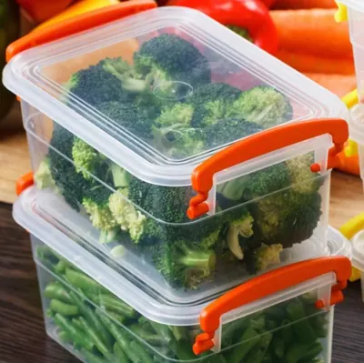
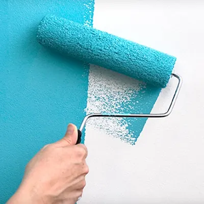
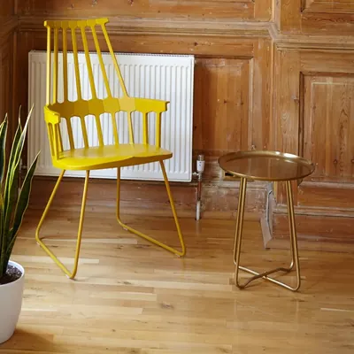
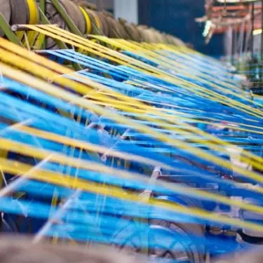

Ochrona przed bakteriami wbudowana w materiałAntibacterial protection built into the material
SEANTEX™ to dodatek do tworzyw sztucznych, farb, żywic i tkanin. Dodany w produkcji, chroni wyrób przed bakteriami, pleśnią i grzybami przez cały okres jego życia - bez nanometali.SEANTEX™ is an additive for plastics, paints, resins and fabrics. Added during production, it protects the product against bacteria, mould and fungi throughout its life - without nanometals.
SEANTEX™ (STX™) to innowacyjny dodatek antybakteryjny, który łączy się z materiałem w trakcie produkcji. Gotowy wyrób - pojemnik, farba, powłoka czy tkanina - sam hamuje rozwój drobnoustrojów, bez dodatkowych środków czyszczących.SEANTEX™ (STX™) is an innovative antibacterial additive that becomes part of the material during production. The finished product - a container, paint, coating or fabric - inhibits the growth of microorganisms on its own, without additional cleaning agents.
Testy wykazały, że na wyrobach z dodatkiem STX™ nie następuje wzrost mikroorganizmów, m.in. gronkowca (Staph), E. coli i Salmonelli.Tests have shown that products made with STX™ do not grow microorganisms, including Staph, E. coli and Salmonella.
Nietoksyczny, bez nanometaliNon-toxic, nanometal-freeNie zawiera nanosrebra ani innych nanometali.Contains no nano-silver or other nanometals.
W 100% pochodzenia naturalnego100% natural originBezpieczniejsza alternatywa dla dodatków opartych na metalach.A safer alternative to metal-based additives.
Wysokie właściwości antybakteryjneHigh antibacterial performanceHamuje wzrost bakterii, pleśni i grzybów.Inhibits the growth of bacteria, mould and fungi.
Przez cały okres życia produktuFor the whole product lifeWysoka trwałość i wytrzymałość mechaniczna.High durability and mechanical strength.
Uniwersalny i łatwy w obsłudzeVersatile and easy to useRóżne stężenia i nośniki, bez inwestycji w nowe maszyny.Various concentrations and carriers, no new equipment needed.
Przyjazny dla środowiskaEnvironmentally friendlyZdrowszy produkt bez wzrostu kosztów produkcji.A healthier product without higher production costs.
Gdzie stosuje się SEANTEX™Where SEANTEX™ is used
Jeden dodatek do wielu materiałów - w każdej gałęzi przemysłu, w której pracuje się z polimerami.One additive for many materials - in every industry that works with polymers.

Tworzywa sztucznePlastics
Tworzywa, żywice i wyroby formowane każdą metodą: pojemniki próżniowe, opakowania na żywność, folie do pakowania, artykuły biurowe.Plastics, resins and products made by any moulding method: vacuum containers, food packaging, wrapping film, office supplies.

Farby i lakieryPaints and varnishes
Farby, lakiery i materiały specjalne dla klientów z branży przemysłowej i detalicznej.Paints, varnishes and specialty materials for industrial and retail customers.

Żywice i powłokiResins and coatings
Materiały wykończeniowe, woski, oleje i żywice, elementy samochodów i każda branża, w której używa się polimerów.Finishing materials, waxes, oils and resins, car components and every industry that uses polymers.

TekstyliaTextiles
Tkaniny o właściwościach bakterio- i grzybobójczych: pościel osobista i medyczna, bielizna, odzież specjalistyczna.Fabrics with antibacterial and antifungal properties: personal and medical bedding, underwear, specialist clothing.
Film o preparacie SEANTEX™ (wersja angielska).SEANTEX™ product film.
Wdrożenie bez nowych maszynNo new equipment needed
SEANTEX™ jest dostępny w różnych stężeniach i na różnych nośnikach, dzięki czemu łatwo dopasować go do konkretnego procesu.SEANTEX™ comes in a range of concentrations and carriers, so it can be matched to a specific process.
Dodatek wprowadza się do istniejącej linii produkcyjnej, bez inwestowania w nowy sprzęt. To pozwala szybko rozpocząć produkcję wyrobów z ochroną antybakteryjną.The additive is introduced into the existing production line without investing in new equipment, which allows a quick start of antibacterial production.
Bez nanosrebra i innych nanometaliFree of nano-silver and other nanometals
Wiele dodatków antybakteryjnych w przemyśle opiera się na nanosrebrze. Ze względu na jego toksyczność dla organizmów żywych i środowiska stopniowo ogranicza się wprowadzanie takich produktów na rynek. SEANTEX™ wypełnia tę lukę: daje zdrowszy, bezpieczniejszy i bardziej ekologiczny wyrób, bez wzrostu kosztów produkcji.Many industrial antibacterial additives rely on nano-silver. Because of its toxicity to living organisms and the environment, such products are gradually being restricted. SEANTEX™ fills this gap with a healthier, safer and greener product, without increasing production costs.
Occupational Medicine (Oxford Academic)
Narażenie na nanocząstki srebra może działać neurotoksycznie i wpływać na pamięć krótkotrwałą i roboczą; przy wdychaniu działa głównie na płuca i wątrobę.Exposure to silver nanoparticles may be neurotoxic and affect short-term and working memory; when inhaled it mainly affects the lungs and liver.
Uniwersytet Medyczny we WrocławiuWrocław Medical University
Artykuł o rosnącym zastosowaniu nanocząstek srebra i ryzyku ich szkodliwego wpływu na człowieka i środowisko.An article on the growing use of silver nanoparticles and the risk of their harmful effects on humans and the environment.
Badania in vitro wskazują, że nanocząstki srebra są toksyczne dla komórek skóry, wątroby, płuc, mózgu, naczyń i narządów rozrodczych ssaków.In vitro studies indicate that silver nanoparticles are toxic to mammalian cells of the skin, liver, lung, brain, vascular system and reproductive organs.
dr hab. Małgorzata Kus-Liśkiewicz, prof. URUniwersytet RzeszowskiUniversity of Rzeszów
Partnerstwo naukowe z Uniwersytetem RzeszowskimScientific partnership with the University of Rzeszów
Badania z zastosowaniem SEANTEX™ prowadzimy pod patronatem naukowym Wydziału Biotechnologii Uniwersytetu Rzeszowskiego. To połączenie wiedzy akademickiej z doświadczeniem przemysłowym: wspiera rozwój produktu i przyspiesza przenoszenie wyników badań do realnych zastosowań.Research using SEANTEX™ is carried out under the scientific patronage of the Faculty of Biotechnology, University of Rzeszów. It combines academic knowledge with industrial experience, supporting product development and bringing research results into real applications faster.
Uniwersytet Rzeszowski, Wydział BiotechnologiiUniversity of Rzeszów, Faculty of Biotechnology
Materiały do pobraniaDownloads
Wszystkie dokumenty o preparacie w jednym miejscu, podzielone na karty, certyfikaty, raporty z badań i broszury. Każdy plik z opisem, rokiem i rozmiarem.All product documents in one place: data sheets, certificates, test reports and brochures - each with a description, year and file size.
Karty techniczne i karty charakterystykiTechnical and safety data sheets
Parametry produktu i zasady bezpiecznego stosowania.Product parameters and safe handling.
Linki prowadzą do Państwa obecnych plików. Na docelowej stronie każdy dokument może mieć wersję polską i angielską, a nowe pliki dodaje się w panelu w kilka sekund.Links lead to the current files. On the final site every document can have a Polish and an English version.
Zapytaj o ofertę lub próbkęRequest an offer
Napisz, do jakiego materiału i procesu chcesz zastosować SEANTEX™ - dobierzemy stężenie i nośnik.Tell us which material and process you want to use SEANTEX™ in - we will match the concentration and carrier.